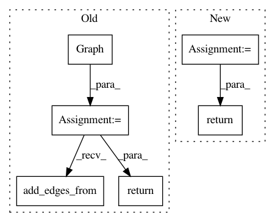

97b2ccec94583a7876566a340f06e84a63340272,pgmpy/inference/ExactInference.py,VariableElimination,induced_graph,#VariableElimination#Any#,210
Before Change
edges.append((i, j))
// Final induced graph
graph = nx.Graph()
graph.add_edges_from(edges)
return graph
class BeliefPropagation(Inference):
After Change
working_factors[variable].append(list(phi))
eliminated_variables.add(var)
edges_comb = [itertools.combinations(c, 2)
for c in filter(lambda x: len(x) > 1, cliques)]
return nx.Graph(itertools.chain(*edges_comb))
class BeliefPropagation(Inference):
In pattern: SUPERPATTERN
Frequency: 3
Non-data size: 6
Instances
Project Name: pgmpy/pgmpy
Commit Name: 97b2ccec94583a7876566a340f06e84a63340272
Time: 2015-03-26
Author: pratyaksh@me.com
File Name: pgmpy/inference/ExactInference.py
Class Name: VariableElimination
Method Name: induced_graph
Project Name: stellargraph/stellargraph
Commit Name: b17c639862ab1b9ab14e8c55a70e0ce002967e3f
Time: 2020-03-03
Author: Huon.Wilson@data61.csiro.au
File Name: tests/mapper/test_node_mappers.py
Class Name:
Method Name: example_graph_2
Project Name: stellargraph/stellargraph
Commit Name: 55ed2c7f725791f31983560c4ad520b2e0dc8e58
Time: 2020-03-03
Author: Huon.Wilson@data61.csiro.au
File Name: tests/data/test_metapath_walker.py
Class Name:
Method Name: create_test_graph